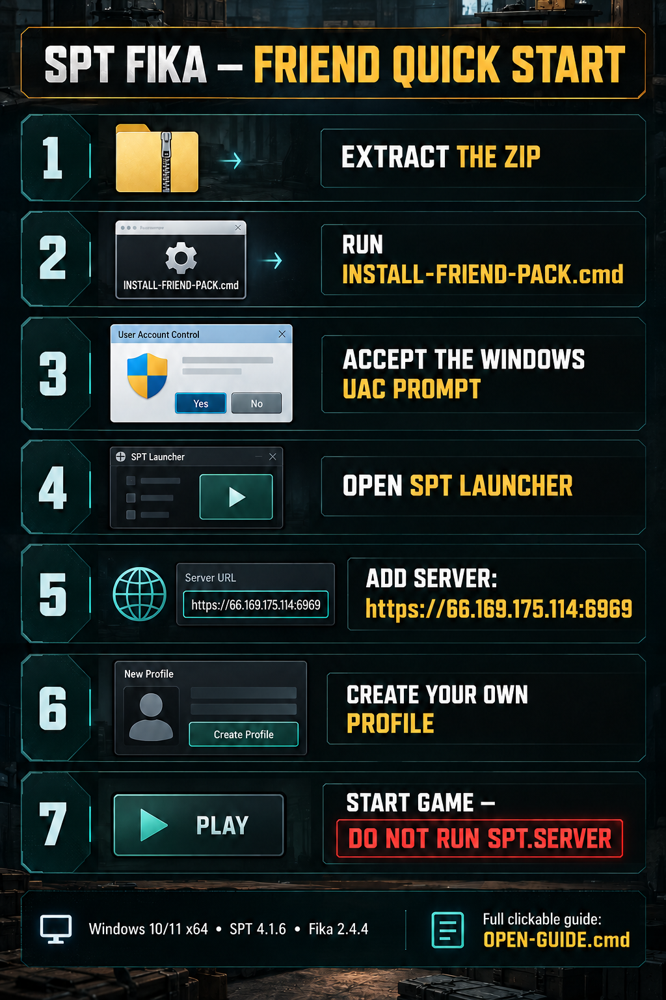

SPT Fika — Friend Quick Start
Client-only pack for Windows 10/11 x64, SPT 4.1.6, EFT 0.16.9.40743, and Fika 2.4.4.
Open visual guideOpen text guideConnection details
Installation
Extract the complete ZIP to a normal folder. Do not install from Windows ZIP preview.
Double-click
INSTALL-FRIEND-PACK.cmd.Accept the Windows UAC prompt. It is required only to create the Fika firewall rule.
Select your SPT 4.1.6 folder if the folder picker appears.
Open SPT Launcher, choose Add New Server, and enter the address supplied privately by the host:
https://HOST_ADDRESS:6969.Create your own profile. Never use the host's or another friend's profile.
Start the game. Do not run SPT.Server on a client PC.
Built-in safety
The installer checks Windows, PowerShell, SPT/EFT versions, free disk space, and all 669 SHA-256 hashes before changing anything. Existing client mods are backed up. A failed copy or verification automatically restores the previous files. See INSTALL-LOG.txt if anything fails.
If Windows SmartScreen appears, confirm the ZIP came directly from your host, then choose More info → Run anyway. Do not disable Windows Security.
Help and official links
Official Fika installation guide
Joining a Fika server
Fika troubleshooting and FAQ
Fika 2.4.4 release
A PNG cannot contain clickable hyperlinks; this HTML companion provides them.